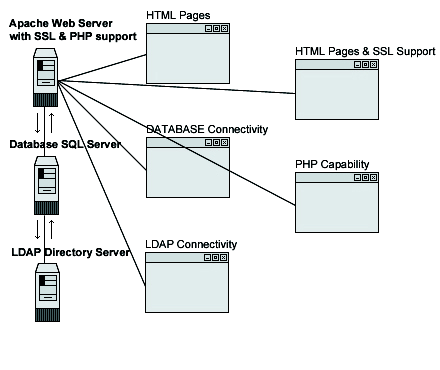

29.3. Linux Apache Web Server
I expect that most of the users that read this book will be especially interested in knowing how to install the Apache web server in the most secure, and optimized, way. In its base install, Apache is no more difficult to install then the other software we have installed on our Linux server. The process can become tricky when we want to add some third party modules or programs. There are a lot of possibilities, variants and options for installing Apache.
we have provided some step-by-step examples where you can see how to build Apache with other third-party modules and programs like mod_ssl, mod_perl, PHP4, LDAP connectivity, etc. Of course, the building of these programs is optional, and you are free to compile only what you want, i.e. you may want to compile Apache with support for PHP4, but without SSL or PostgreSQL database connectivity etc. To simplify matters we assume some prerequisites for each example. If these don't fit your needs, simply modify the steps to suit your needs.
In this section, we explain and cover some of the basic ways in which you can adjust the configuration to improve the server's performance. Also, for the interested, we'll provide a procedure to be able to run Apache as a non root-user and in a chrooted environment for optimal security.

These installation instructions assume
Commands are Unix-compatible.
The source path is /var/tmp, other paths are possible.
Installations were tested on Red Hat Linux 6.1 and 6.2.
All steps in the installation will happen in super-user account root.
Apache version number is 1.3.12
Mod_SSL version number is 2.6.4-1.3.12
Mod_Perl version number is 1.24
Mod_PHP version number is 4.0.0
Packages
| Apache Homepage: http://www.apache.org/ | Mod_Perl Homepage: http://perl.apache.org/ |
| Apache FTP Site: 63.211.145.10 | Mod_Perl FTP Site: 63.211.145.10 |
| You must be sure to download: apache_1.3.12.tar.gz | You must be sure to download: mod_perl-1.24.tar.gz |
| Mod_SSL Homepage: http://www.modssl.org/ | Mod_PHP Homepage: http://www.php.net/ |
| Mod_SSL FTP Site: 129.132.7.171 | You must be sure to download: php-4.0.0.tar.gz |
| You must be sure to download: mod_ssl-2.6.4-1.3.12.tar.gz |
And don't forget that these are the prerequisites if you are following the steps described by us exactly.
OpenSSL should be already installed on your system if you want Apache and SSL encryption support.
PosgreSQL should be already installed on your system if you want Apache and PostgreSQL database connectivity support.
MM should be already installed on your system if you want Apache and MM high-performance RAM-based session cache support.
OpenLDAP should be already installed on your system if you want Apache and LDAP directory connectivity support.
IMAP & POP should be already installed on your system if you want Apache and IMAP & POP capability.
: For more information on the required software, see the related chapter(s) in this book.
Before you decompress the tarballs, It is a good idea to make a list of files on the system before you install Apache, and one afterwards, and then compare them using diff to find out what file it placed where. Simply run find /* > Apache1 before and find /* > Apache2 after you install the software, and use diff Apache1 Apache2 > Apache-Installed to get a list of what changed.
To compile, decompress the tarballs (tar.gz).
[root@deep ]/# cp apache_version.tar.gz /var/tmp
[root@deep ]/# cp mod_ssl-version-version.tar.gz /var/tmp
[root@deep ]/# cp mod_perl-version.tar.gz /var/tmp
[root@deep ]/# cp php-version.tar.gz /var/tmp
[root@deep ]/# cd /var/tmp/
[root@deep ]/tmp# tar xzpf apache_version.tar.gz
[root@deep ]/tmp# tar xzpf mod_ssl-version-version.tar.gz
[root@deep ]/tmp# tar xzpf mod_perl-version.tar.gz
[root@deep ]/tmp# tar xzpf php-version.tar.gz
|